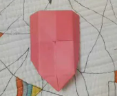

Camel

Interesting Facts about Camel
- Camel's ears are furry.
- Camels can move easily on sand because of it's specially designed feet.
- When they find, they will drink as much as possible.
Chameleon

Interesting Facts about Chameleon
- Chameleons are reptiles that are part of the iguana suborder.
- Changing skin color is an important part of comunication among chameleons.
- Most chameleons have a prehensile tail that they use to wrap around tree branches.
Cicada

Interesting Facts about Cicada
- Adult cicadas only live 4-6 weeks before they die.
- The cicada shells on trees are left behind by the nymph.
- Some cicadas play dead when threatened.
Panda

Interesting Facts about Panda
- They have great camouflage for their environment.
- Giant pandas spend 10-16 hours a day feeding, mainly on bamboo.
- Pandas need at least 2 different bamboo species in their range to avoid starvation.
Pigeon

Interesting Facts about Pigeon
- Pigeons are incredibly complex and intelligent animals.
- Pigeons are renowned for their outstanding navigational abilities.
- Pigeons have excelent hearing abilities.
Teddy Bear

Interesting Facts about Teddy Bear
- Teddy bears got their name from the story that Teddy Roosevelt refused to shoot a bear cub while on a hunting trip in 1902.
- The world's largest stitched teddy bear is proudly American! The 55-foot-4 creation was made in 2008 and is named C.T.Dreams, which stands for Connect the Dreams.
- The world's smallest stitched teddy bear is a mere 0.29 inches tall! It was created by South African artist Cheryl Moss who is known for her minuscule work.
Ninja Star
Information about Ninja Star
A shuriken is a Japanese concealed weapon that was used as a hidden dagger or metsubushi to distract or misdirect.
They are also known as throwing stars, or ninja stars, although they were originally designed in many different shapes.
The major varieties of shuriken are the bō shuriken and the hira shuriken or shaken. Apparently they are also referred
to as Kung-fu stars, although not as frequently.
Shield

Information about Shield
A shield is a piece of personal armour held in the hand, which may or may not be strapped to the wrist or forearm.
Shields are used to intercept specific attacks, whether from close-ranged weaponry or projectiles such as arrows, by means
of active blocks, as well as to provide passive protection by closing one or more lines of engagement during combat.
I hope you liked my Origami Webpage